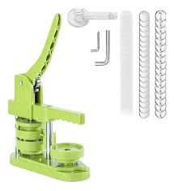
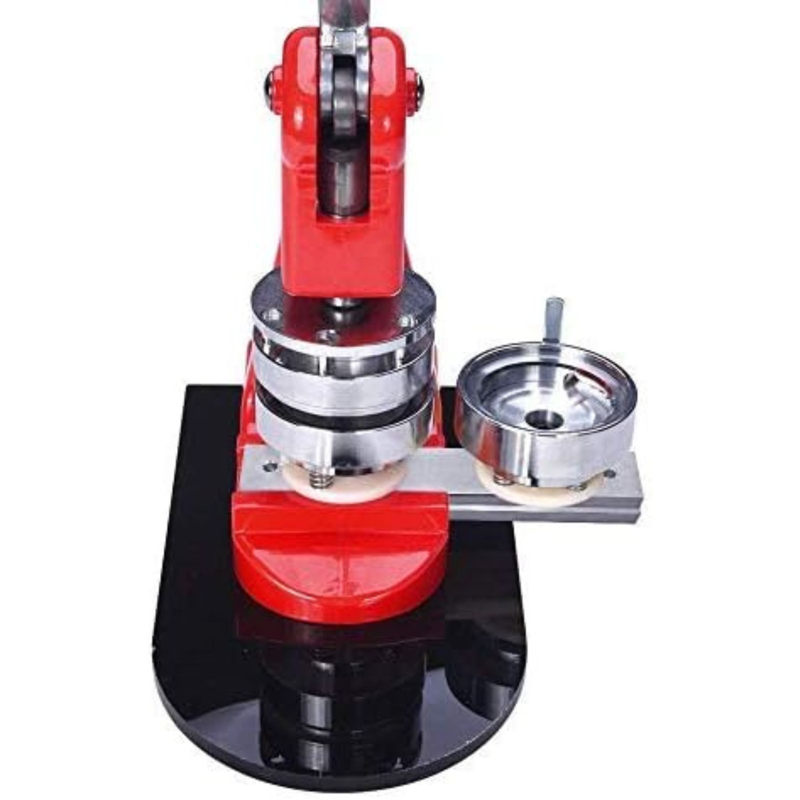
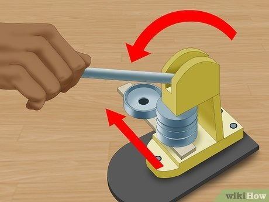
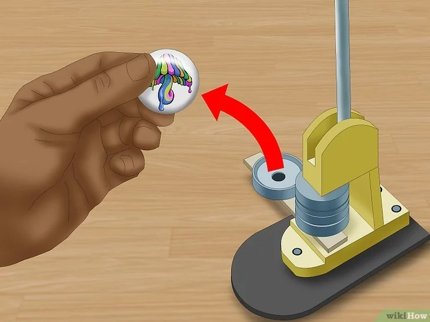
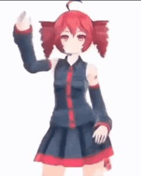

Nuestro Proceso de Fabricación
En Pearto Pins seguimos un proceso detallado para garantizar la máxima calidad en cada producto. Cada pin es elaborado con materiales seleccionados y revisado por especialistas antes de ser entregado al cliente
Desde la recepción de la idea inicial hasta la entrega final cada etapa es supervisada por personal capacitado y apoyada por herramientas especializadas Esto nos permite ofrecer acabados profesionales y mantener altos estándares de producción

Proceso General
Nuestro procedimiento desde cero para hacer pines es tener una maquina para hacer foto botones/pines primero de todo es usar un laton poniendo la foto y un plastico protector encima, despues hacer una vuelta de 180° para comprimir todo junto y quede en un solo boton.

Cuando hayamos comprimido el boton se debe de poner el acero inoxidable se hace el mismo procedimiento de hacer una vuelta de 180° ya que queda atorado el boton, cuando se vuele a comprimir se hace una presion en el acero para que quede comprimido por completo el boton como el acero

como recomendacion se debe de poner fuerza para que el boton como el acero no quede despegado, y listo de esa manera tienes un pin o boton

Para mas explicacion e informacion puedes ver este video que explica paso por paso